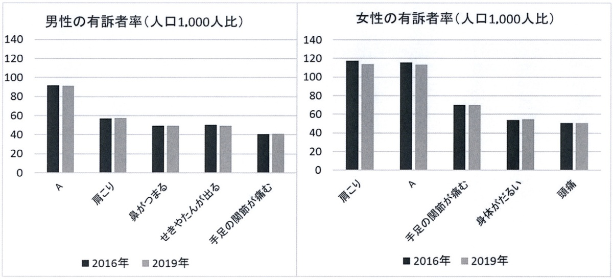
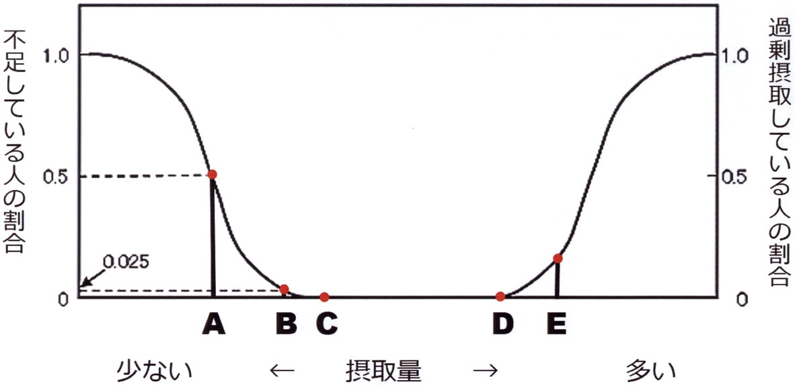
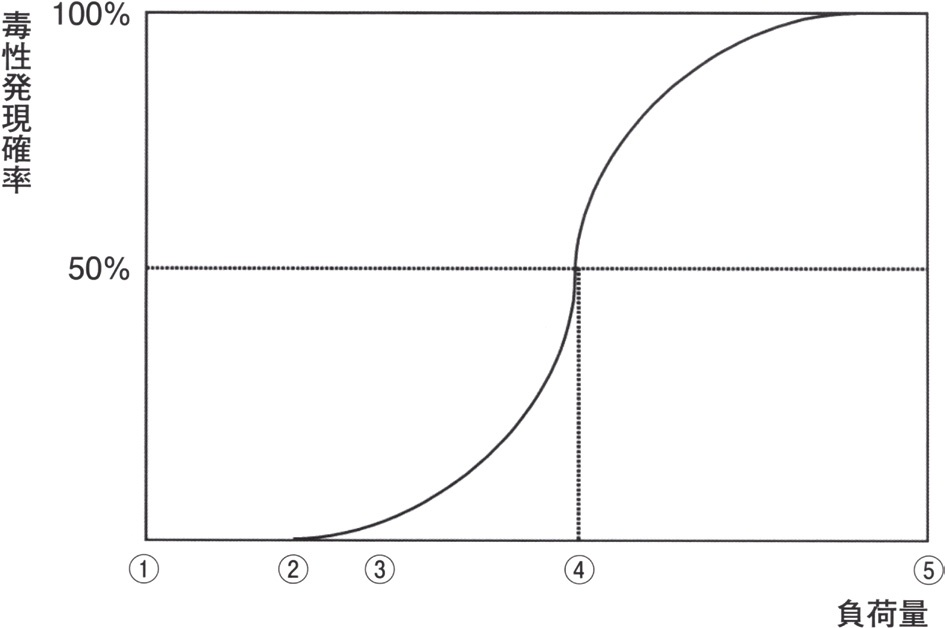
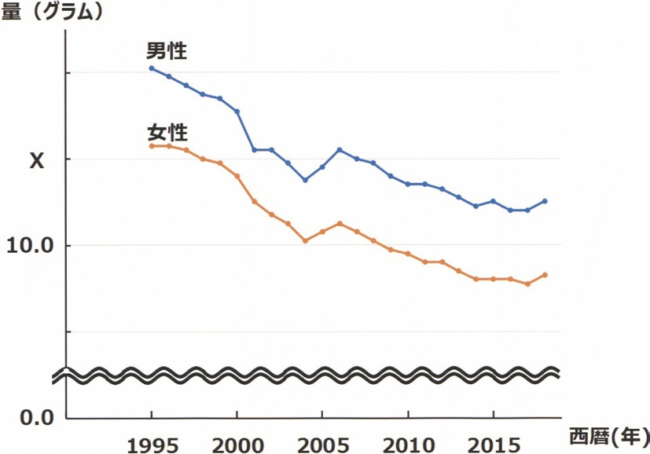

| 選択肢 | 解説 |
|---|---|
| ａ 自立歩行ができる期間 | 誤り。歩行の可否だけを見る指標ではない。歩行障害があっても他の生活動作に制限が無ければ「健康」側に含まれ得るし、逆に歩行できても認知機能や精神面の問題で日常生活が制限されていれば健康寿命は尽きている——身体機能の一部（歩行）だけに限定した定義ではない。 |
| ｂ 働くことができる期間 | 誤り。就労の可否は年齢・職種・雇用環境など健康以外の要因にも左右される。高齢で就労していなくても日常生活に制限のない人は健康寿命の内側にいるし、若くても病気により就労できない人がいる——「働けるか」は健康状態そのものの指標ではない。 |
| ｃ 医療を受けていない期間 | 誤り。通院・服薬をしていても日常生活に制限がなければ健康寿命に含まれる。高血圧や脂質異常症などで定期通院しながら制限なく生活している人は多く、「医療を受けていない」を基準にすると健康寿命が実態より短く出てしまう。 |
| ｄ 定期的な通院をせずに生活できる期間 | 誤り。ｃと同じ理由——通院の有無は日常生活動作の制限とは別の軸。健康寿命が測ろうとしているのは「医療へのアクセス状況」ではなく本人の生活機能がどれだけ保たれているかである。 |
| ◯ ｅ 健康上の問題で日常生活が制限されることなく生活できる期間 | ◯ 正しい。健康寿命は「健康上の問題で日常生活が制限されることなく生活できる期間」と定義される。平均寿命（0歳の平均余命）から、この「日常生活に制限のある期間（不健康な期間）」を差し引いた残りが健康寿命にあたる。この定義なら通院や投薬の有無、歩行の可否といった個別の医療行為ではなく、本人が自分の生活をどれだけ制限なく送れているかという主観・機能面を一本の軸で評価できる。 |
| 選択肢 | 解説 |
|---|---|
| ａ 受動喫煙防止対策 | 誤り（＝健康増進法に基づく）。受動喫煙防止は健康増進法が明文で規定する事業の1つ。望まない受動喫煙を防ぐための施設管理者の義務などが健康増進法に定められている。 |
| ｂ 国民健康・栄養調査 | 誤り（＝健康増進法に基づく）。国民健康・栄養調査は健康増進法に基づき厚生労働省が毎年実施する調査である。身体状況・栄養摂取状況・生活習慣の3つの調査票からなり、健康日本21の進捗を測る基礎資料にもなる（NO.298）。 |
| ｃ 国民健康づくり運動 | 誤り（＝健康増進法に基づく）。健康日本21そのものが健康増進法上に位置づけられた国民健康づくり運動である。個人の生活習慣改善と社会環境整備を通じて健康寿命の延伸を目指す国レベルの計画として健康増進法が根拠法になる。 |
| ｄ 市町村によるがん検診 | 誤り（＝健康増進法に基づく）。市町村が行うがん検診は健康増進法に基づく「健康増進事業」の1つとして実施されている。対策型がん検診（NO.296）を含む住民健診は市町村が主体となって実施し、根拠法は健康増進法である。 |
| ◯ ｅ 特定健診・特定保健指導 | ◯ 正しい（＝健康増進法に基づく事業でない）。特定健診・特定保健指導は高齢者の医療の確保に関する法律（高齢者医療確保法）に基づき医療保険者が実施する事業であり、健康増進法上の事業ではない。対象もメタボリックシンドロームに着目した40〜74歳の被保険者・被扶養者に限られ、市町村が全住民を対象に行うがん検診とは実施主体・根拠法とも異なる。 |
| 選択肢 | 解説 |
|---|---|
| ａ 胃がん | 誤り（＝含まれる）。胃がん検診は対策型がん検診の5つの1つで、健康増進法に基づき市町村が実施する。50歳以上を対象に2年に1回の胃内視鏡検査（バリウム造影も可、その場合は40歳以上で毎年）が行われる。 |
| ◯ ｂ 膵がん | ◯ 正しい（＝含まれない）。膵がんは健康増進法に基づく対策型がん検診の対象になっていない。対策型がん検診は胃がん・大腸がん・肺がん・乳がん・子宮頸がんの5つに限られ、膵がんは有効な検診方法が確立していないため公的な住民検診の対象から外れている。 |
| ｃ 乳がん | 誤り（＝含まれる）。乳がん検診は対策型がん検診の1つで、40歳以上を対象に2年に1回のマンモグラフィで行われる。画像検査であるため見逃し防止の「二重読影」の対象にもなる。 |
| ｄ 大腸がん | 誤り（＝含まれる）。大腸がん検診は対策型がん検診の1つで、40歳以上を対象に毎年の便潜血検査で行われる。5つの対策型がん検診の中で唯一「毎年」かつ「40歳以上」で検査項目も1つだけの単純な構成。 |
| ｅ 子宮頸がん | 誤り（＝含まれる）。子宮頸がん検診は対策型がん検診の1つで、20歳以上を対象に2年に1回の頸部細胞診および内診で行われる。HPV検査単独法も可で、その場合は30歳以上・5年に1回に間隔が延びる——対策型がん検診の中で唯一20歳から始まる検診。 |
| がん種 | 対象 | 間隔 | 検査 |
|---|---|---|---|
| 大腸がん | 40歳以上 | 毎年 | 便潜血検査 |
| 乳がん | 40歳以上 | 2年に1回 | マンモグラフィ |
| 肺がん | 40歳以上 | 毎年 | 胸部X線（重喫煙者は喀痰細胞診も） |
| 胃がん | 50歳以上 | 2年に1回 | 胃内視鏡（バリウムなら40歳以上・毎年） |
| 子宮頸がん | 20歳以上 | 2年に1回 | 頸部細胞診・内診（HPV単独なら30歳以上・5年に1回） |
| 選択肢 | 解説 |
|---|---|
| ａ 健康経営の推進 | 誤り（＝目標に含まれる）。健康経営の促進は第三次で新設された「社会環境の質の向上」領域の目標の1つ。企業が従業員の健康管理を経営課題として捉える取り組みを広げることを目指している。 |
| ◯ ｂ 救命救急センター数の増加 | ◯ 正しい（＝目標に含まれない）。救命救急センター数の増加は健康日本21（第三次）の目標項目にない。救急医療体制の整備は医療計画（5疾病5事業）の枠組みで扱われる話題であり、個人の生活習慣改善や社会環境整備を通じた一次予防中心の健康日本21とは目的とする領域が異なる。 |
| ｃ メンタルヘルス対策に取り組む事業場の増加 | 誤り（＝目標に含まれる）。メンタルヘルス対策に取り組む事業場の増加は「社会環境の質の向上」領域の目標の1つ。職場環境の整備を通じて労働者の心の健康を守ることを目指している。 |
| ｄ 利用者に応じた食事提供をしてくれる特定給食施設の増加 | 誤り（＝目標に含まれる）。特定給食施設における個別対応の食事提供の充実は栄養・食生活に関する社会環境整備の目標に含まれる。学校・病院・高齢者施設などの給食を通じた栄養面の支援を広げる狙いがある。 |
| ｅ 「居心地がよく歩きたくなる」まちなかづくりに取り組む市町村数の増加 | 誤り（＝目標に含まれる）。歩きたくなるまちづくりに取り組む市町村数の増加は「社会環境の質の向上」領域の代表的な目標。歩道の整備など環境改善を通じて身体活動量を自然に増やすヘルスプロモーションの発想そのもの（NO.302と同じ考え方）。 |
| 選択肢 | 解説 |
|---|---|
| ａ 医 療 | 誤り（＝含まれる）。国民生活基礎調査は保健・医療・福祉・年金・所得等、国民生活の基礎的事項を調査する。健康について自覚症状の有無（有訴者率）・通院しているか（通院者率）などを尋ねる項目が「医療」に相当する。 |
| ◯ ｂ 教 育 | ◯ 正しい（＝含まれない）。教育は国民生活基礎調査の調査項目に含まれていない。調査目的は「保健・医療・福祉・年金・所得等、国民生活の基礎的事項を調査すること」であり、就学状況や学力といった教育分野の項目はこの調査の対象ではない。 |
| ｃ 所 得 | 誤り（＝含まれる）。所得についての調査票があり、世帯の年収などを尋ねる。貯蓄額を含めた家計の状況も別に調査される。 |
| ｄ 福 祉 | 誤り（＝含まれる）。介護についての項目があり、要介護認定の有無・要介護になった原因などを尋ねる——これが福祉領域にあたる。介護が必要となった原因の1位は認知症、2位は脳血管疾患である。 |
| ｅ 保 健 | 誤り（＝含まれる）。健康についての項目があり、自覚症状の有無（有訴者率）・通院の有無（通院者率）などを尋ねる——これが保健領域にあたる。令和4年調査では男女とも有訴者率1位は腰痛だった（NO.287）。 |

| 選択肢 | 解説 |
|---|---|
| ａ 下 痢 | 誤り。下痢は一過性の症状であることが多く、人口1,000人比で見た有訴者率の上位を占める慢性的な症状ではない。グラフのAは男女とも上位に来る症状であり、下痢のような急性・一過性の訴えとは頻度の桁が異なる。 |
| ｂ 動 悸 | 誤り。動悸は循環器系の自覚症状の1つだが、男女とも有訴者率の上位を占めるほど頻度は高くない。グラフでAは男性で1位、女性でも上位に来ており、動悸ほど限られた訴えの頻度とは規模が合わない。 |
| ｃ 腹 痛 | 誤り。腹痛も急性の訴えであることが多く、慢性的に高頻度で訴えられる症状の代表ではない。Aのように性別を問わず継続的に上位を占める症状としては当てはまりにくい。 |
| ◯ ｄ 腰 痛 | ◯ 正しい。Ａは腰痛である。令和4年（2022年）国民生活基礎調査でも、男女ともに有訴者率の1位は腰痛、2位は肩こりで、女性はこの2つが僅差になっている——この傾向は2016・2019年の調査でも同様である。グラフでは男性の有訴者率でAが最も高い棒として描かれ、女性でも「肩こり」に次ぐ高い位置にあることが、男女とも上位という腰痛の特徴と一致する。 |
| ｅ 手足のしびれ | 誤り。手足のしびれは高齢者や特定疾患で見られる症状で、全年齢を通じた有訴者率で男女とも最上位に来る症状ではない。グラフでも下位の棒に位置づけられる症状であり、Aの位置（最上位付近）とは一致しない。 |

| 選択肢 | 解説 |
|---|---|
| ａ A | 誤り。Aは図の中で不足の確率が0.5（50%）となる摂取量——推定平均必要量（EAR）にあたる。「半数の人が必要量を満たさない」レベルであり、「ほとんどの人が満たす」には遠く不足している。 |
| ◯ ｂ B | ◯ 正しい。Bは不足の確率がごく小さい値（図では0.025＝2〜3%程度）まで下がった摂取量——推奨量（RDA）にあたる。推奨量は「ほとんどの人（97〜98%）が1日の必要量を満たすと推定される摂取量」と定義され、推定平均必要量（A）に安全を見込んだ量を上乗せして設定される。図でBはAより右（摂取量が多い側）にあり、不足曲線がほぼ0に近づいた位置に置かれている。 |
| ｃ C | 誤り。Cは不足の確率がほぼ完全に0になった摂取量——目安量（AI）に相当する位置。目安量は、推定平均必要量や推奨量を算定するための科学的根拠が十分でないときに用いる代替の指標であり、「推奨量」そのものを問う本問の答えにはならない。 |
| ｄ D | 誤り。Dは図の右側、過剰摂取による健康障害の確率が上がり始める摂取量——耐容上限量（UL）に近い位置。不足ではなく過剰側の指標であり、「必要量を満たす」ことを問う推奨量とは軸が逆。 |
| ｅ E | 誤り。Eはさらに摂取量が多く、過剰摂取による健康障害の確率がすでにある程度高まった摂取量。耐容上限量を超えて健康障害のリスクが無視できなくなった領域であり、推奨量からは最も遠い位置にある。 |

| 選択肢 | 解説 |
|---|---|
| ａ ① | 誤り。①は負荷量が最も小さく、毒性発現確率がほぼ0%のまま横ばいの領域にある。曲線がまだ立ち上がる気配すら見せていない段階で、「安全か危険かの境目」を示す点としては早すぎる（情報が無い側）。 |
| ◯ ｂ ② | ◯ 正しい。②は毒性発現確率が0%からわずかに離れ始める、曲線が横ばいから立ち上がりへ転じる境目の負荷量である。これは実験で「有害な影響が観察されない最大の負荷量」＝無毒性量（NOAEL）に相当し、1日摂取許容量（ADI）はこの無毒性量を動物とヒトの種差・個体差を見込んだ安全係数（通常100など）で除して算出する。「発現確率がまだ立ち上がっていない最後の点」を基準にするのがADI計算の考え方であり、確率が高くなった点を基準にはしない。 |
| ｃ ③ | 誤り。③は曲線がはっきり立ち上がり、毒性発現確率がすでに無視できない水準まで上がった点である。この段階は「最小影響量（LOAEL＝有害な影響が観察される最小の負荷量）」に近く、無毒性量（②）より一段階危険側にある。 |
| ｄ ④ | 誤り。④は毒性発現確率がちょうど50%となる負荷量（図の破線が交差する点）——半数影響量にあたる。半数影響量は物質の毒性の強さ（力価）を比較するための基準であって、安全な摂取量を決める基準ではない——ここを負荷量に使うと半数の人に影響が出る量を「許容量」にしてしまうことになる。ADIを求める起点は"影響が出ない"点（②）であって"半分に影響が出る"点（④）ではない——本問の正答率が65%にとどまる最大の理由は、この破線に釣られて④を選んでしまう受験者が多いためである。 |
| ｅ ⑤ | 誤り。⑤は負荷量が最も大きく、毒性発現確率がほぼ100%に達した領域である。大多数に健康影響が出る水準であり、安全性の基準を作るための出発点としては危険側に寄りすぎている。 |
| 選択肢 | 解説 |
|---|---|
| ａ 婚姻率 | 誤り。婚姻率は人口動態調査（出生・死亡・婚姻・離婚・死産の届出を集計する調査）から求められる指標である。国民生活基礎調査は世帯を対象とする調査であり、婚姻届の集計とは調査の出所が異なる。 |
| ｂ 受療率 | 誤り。受療率は患者調査（医療施設を利用した患者数を調べる調査）から求められる指標である。「ある1日に医療施設で治療を受けた患者数」を人口10万対で表すもので、世帯への聞き取りである国民生活基礎調査からは求められない。 |
| ｃ 罹患率 | 誤り。罹患率はがん登録や感染症の届出集計など、新たに疾病を発生した人数を追跡する仕組みから求められる指標である。世帯への1回の質問票調査である国民生活基礎調査は、一定期間の新規発生を継続的に捕捉する設計にはなっていない。 |
| ◯ ｄ 有訴者率 | ◯ 正しい。有訴者率は国民生活基礎調査の健康票にある「自覚症状の有無」の項目から求められる指標である（NO.287）。病気やけが等で自覚症状のある人数を人口1,000人比で表したもので、令和4年調査では男女とも1位が腰痛、2位が肩こりだった。 |
| ◯ ｅ 通院者率 | ◯ 正しい。通院者率も国民生活基礎調査の健康票にある「通院しているか」の項目から求められる指標である。通院の理由として最多なのは男女とも高血圧である（NO.297の高血圧の話題ともつながる）。 |

| 選択肢 | 解説 |
|---|---|
| ａ 10.2 | 誤り。グラフの縦軸で見るとXは「10.0」の目盛りよりかなり上にあり、10.2ではXと10.0の目盛りの間隔がほとんど無くなってしまう。図の目盛り間隔（0.0〜10.0〜X〜最上段）から見ても差が小さすぎて不自然。 |
| ｂ 10.5 | 誤り。aと同じ理由で、Xと「10.0」目盛りの間隔に対してまだ数値が小さすぎる。図ではXの目盛りは女性の1995年開始点の高さとほぼ一致しており、その位置は10.0からある程度離れている。 |
| ｃ 11.0 | 誤り。同じくXと「10.0」の間隔に対して数値がまだ小さく、グラフの等間隔の目盛り（0.0・10.0・X・最上段）から逆算した値としては合わない。 |
| ◯ ｄ 12.0 | ◯ 正しい。Xは12.0である。グラフのXの目盛りは、1995年時点の女性の1人当たり食塩消費量の開始点とほぼ同じ高さに引かれている——目盛り間隔（0.0から10.0までの区間と、10.0からXまでの区間、Xから最上段（男性の1995年開始点）までの区間）がほぼ均等であることから、10.0の次の目盛りとして矛盾なく収まる値が12.0である。日本人の食塩摂取量は1995年以降、男女とも一貫して減少を続けており、女性はこの時点で10gを超え男性より低い水準から出発している——減塩の啓発や食生活改善の効果が積み重なった長期トレンドの起点にあたる。 |
| ｅ 15.0 | 誤り。15.0はグラフで男性の1995年開始点（Xより上の最上段付近）に近い高さであり、Xの位置（女性の開始点）とは一致しない。男女の差を考えると、女性の数値に男性の数値をそのまま当てはめる誤りにあたる。 |
| 選択肢 | 解説 |
|---|---|
| ａ 健康日本21 | 誤り（＝規定されている）。健康日本21は健康増進法に基づき策定される国民健康づくり運動である（NO.283）。健康増進法の5本柱の1つに数えられる。 |
| ｂ 受動喫煙防止 | 誤り（＝規定されている）。受動喫煙防止は健康増進法が明文で規定する事業の1つである（NO.299）。施設管理者に望まない受動喫煙を防止する義務などが定められている。 |
| ｃ 食事摂取基準 | 誤り（＝規定されている）。食事摂取基準を定めることは健康増進法が規定する事項である（NO.288・295）。厚生労働大臣が5年ごとに定める栄養の基準がこれにあたる。 |
| ◯ ｄ 定期予防接種 | ◯ 正しい（＝規定されていない）。定期予防接種は予防接種法に基づき市町村が実施する事業であり、健康増進法の規定事項ではない。健康増進法の5本柱（国民健康・栄養調査／食事摂取基準／受動喫煙防止／健康日本21／市町村健診）のいずれにも予防接種は含まれない——感染症を予防するための予防接種と、生活習慣病対策やがん検診を主体とする健康増進法とは目的も根拠法も別である。 |
| ｅ 国民健康・栄養調査 | 誤り（＝規定されている）。国民健康・栄養調査は健康増進法に基づき厚生労働省が毎年実施する調査である（NO.283・298）。身体状況・栄養摂取状況・生活習慣の3調査票からなる。 |
| 選択肢 | 解説 |
|---|---|
| ａ 成人の喫煙率の増加 | 誤り。中間評価では成人の喫煙率は目標に向けて減少しており、増加ではない。受動喫煙防止対策の強化や健康増進法の改正とも歩調を合わせ、喫煙率は継続的な減少傾向にあった。 |
| ｂ 野菜と果物の摂取量の目標達成 | 誤り。野菜摂取量・果物摂取量はいずれも目標に達しなかった項目の代表である。栄養・食生活の目標の中でも達成が難しかった項目として知られ、第三次でも引き続き重点課題とされている。 |
| ｃ 20歳代女性のやせの者の割合の増加 | 誤り。20歳代女性のやせの者の割合は改善が見られず、悪化（増加）した項目として中間評価で指摘された——選択肢の表現自体は事実に近いが、本問で問われる「正しい」項目としては後述のeが該当する。若年女性のやせは健康日本21（第三次）でも「ライフコースアプローチ」の重点課題として引き継がれている（NO.285）。 |
| ｄ 20歳代における歯肉に炎症所見を有する者の割合の増加 | 誤り。歯・口腔の健康分野では改善が思わしくない項目があったものの、「増加」という表現が直接の中間評価の主要な達成状況として強調されたわけではない——本問の正解は明確に目標達成が報告された8020運動（e）である。 |
| ◯ ｅ 80歳で20歯以上の自分の歯を有する者の割合の目標達成 | ◯ 正しい。8020（ハチマルニイマル）運動の指標である「80歳で20歯以上の自分の歯を有する者の割合」は、健康日本21（第二次）の中間評価（2018年）で目標を達成した数少ない項目の1つとして報告された。歯科保健の分野では、この指標の達成が特筆すべき成果として扱われ、健康日本21（第三次）でも歯・口腔の健康は生活習慣・社会環境の改善項目として引き継がれている。 |
| 選択肢 | 解説 |
|---|---|
| ａ 特定健診・特定保健指導は事業主が行う。 | 誤り。特定健診・特定保健指導を実施するのは医療保険者（健康保険組合・国民健康保険など）であり、事業主そのものではない。被用者保険の場合は事業主と保険者が密接に連携するが、法的な実施主体はあくまで医療保険者である（NO.283）。 |
| ◯ ｂ 肺がん検診では判定に二重読影が行われる。 | ◯ 正しい。肺がん検診（胸部エックス線撮影）のような画像検査では、見逃し防止のため2人の医師が画像をチェックする「二重読影」が行われる。同様の二重読影は乳がん検診（マンモグラフィ）でも行われ、対策型がん検診の画像診断に共通する精度管理の仕組みである（NO.284）。 |
| ｃ 地域包括支援センターは都道府県が設置する。 | 誤り。地域包括支援センターを設置するのは市町村であり、都道府県ではない。地域包括支援センターは高齢者の介護・医療・保健・福祉を総合的に支援する地域の窓口で、住民に最も近い基礎自治体である市町村が設置・運営を担う。 |
| ｄ 医療法に基づく5疾病5事業には高血圧が含まれる。 | 誤り。医療法に基づく5疾病はがん・脳卒中・急性心筋梗塞・糖尿病・精神疾患の5つであり、高血圧は含まれない。高血圧は生活習慣病として重要だが、医療計画の5疾病には数えられていない——5疾病の名称を正確に覚えておく必要がある。 |
| ｅ PSAによるがん検診は対策型がん検診において推奨されている。 | 誤り。PSA（前立腺特異抗原）によるがん検診（前立腺がん検診）はほとんどの市町村で任意に実施されているものの、対策型がん検診には含まれない。対策型がん検診の対象は胃・大腸・肺・乳・子宮頸の5つに限られ、前立腺がんは死亡率減少効果の科学的根拠がまだ確立していないため公的な推奨からは外れている（NO.284）。 |
| 選択肢 | 解説 |
|---|---|
| ａ 個人には適用されない。 | 誤り。食事摂取基準は年齢・性別を問わずすべての個人が参考にできるよう定められている。集団だけでなく個人の食事評価・改善にも用いられる基準である。 |
| ｂ 65歳未満を対象とする。 | 誤り。食事摂取基準は乳児から高齢者まで全年齢層を対象とする——65歳以上を除外していない。高齢者（65歳以上）はさらに年齢区分が細分化され、フレイル予防の観点からたんぱく質の目標量などが個別に検討されている。 |
| ｃ 妊娠や授乳期間については扱わない。 | 誤り。食事摂取基準には妊婦・授乳婦に関する付加量が個別に定められている。妊娠期・授乳期は必要な栄養素量が変化するため、通常の成人の基準に付加量を上乗せする形で示されている。 |
| ｄ 目標とするBMIは18〜20の範囲である。 | 誤り。目標とするBMIの範囲は年齢区分によって異なり、18〜20という一律の範囲ではない——成人ではおおむね18.5〜24.9（高齢者ではやや高め）の範囲が目標とされる。18〜20は実際の目標値よりかなり低い、痩せ寄りの範囲になる。 |
| ◯ ｅ エネルギーと栄養素の摂取量の基準を示すものである。 | ◯ 正しい。日本人の食事摂取基準はエネルギーと栄養素の摂取量の基準を示すものと定義される。5年に1回、5の倍数年に改定され、推定平均必要量・推奨量・目安量・耐容上限量・目標量の5指標（NO.288）でエネルギー・栄養素ごとに基準値が示される。 |
| 選択肢 | 解説 |
|---|---|
| ◯ ａ 健康増進法 | ◯ 正しい。市町村が行う対策型がん検診（胃・大腸・肺・乳・子宮頸の5つ）は健康増進法に基づき実施される（NO.284・292）。健康増進法が規定する「市町村が行う住民健診」の中心がこのがん検診であり、健康増進法の5本柱の1つにあたる。 |
| ｂ 健康保険法 | 誤り。健康保険法は被用者保険（会社員等の医療保険）の給付・保険料などを定める法律であり、がん検診を規定する法律ではない。医療保険の枠組みを定める法律とがん検診の実施根拠法は別物である。 |
| ｃ がん対策基本法 | 誤り。がん対策基本法はがん対策の基本理念・国や地方公共団体の責務・がん対策推進基本計画の策定など、がん対策全体の大枠を定める法律であり、個別のがん検診の実施を直接規定するものではない。「対策全体の理念」と「検診事業そのものの根拠」は別の法律に分かれている点が本問の引っ掛けになる。 |
| ｄ がん登録推進法 | 誤り。がん登録推進法は全国がん登録（がんと診断された者の情報を都道府県に届け出て国が一元的に集計する制度）を定める法律であり、がん検診そのものの実施根拠ではない。がん登録は「診断された後の情報collection」、がん検診は「発見するための事業」という別の役割である。 |
| ｅ 高齢者医療確保法 | 誤り。高齢者の医療の確保に関する法律（高齢者医療確保法）は特定健診・特定保健指導の根拠法であり、がん検診の根拠法ではない（NO.283・292）。同じ「健診」でも、がん検診（健康増進法）と特定健診（高齢者医療確保法）は根拠法が異なる。 |
| 選択肢 | 解説 |
|---|---|
| ａ 「受動喫煙は肺癌の発症リスクとは無関係です」 | 誤り。受動喫煙は肺癌の発症リスクを明らかに高めることが多数の疫学研究で示されており、「無関係」という説明は医学的事実に反する。受動喫煙防止は健康増進法が規定する事業でもあり（NO.283・292・299）、公衆衛生上重視される対策である。 |
| ◯ ｂ 「2型糖尿病の発症予防には肥満にならないことが重要です」 | ◯ 正しい。肥満（特に内臓脂肪型肥満）は2型糖尿病の最大の危険因子の1つであり、肥満を予防・改善することは2型糖尿病の発症予防に直結する。健康教育として広く伝えるべき、医学的根拠が確立した内容であり、生活習慣病予防の基本メッセージの1つにあたる。 |
| ｃ 「飽和脂肪酸は血中コレステロールを下げる作用があります」 | 誤り。飽和脂肪酸の過剰摂取は血中LDLコレステロールを上昇させる作用があり、「下げる」という説明は逆である。コレステロールを下げる作用が期待されるのは不飽和脂肪酸（魚油・植物油など）であり、脂肪酸の種類を混同した誤った健康教育の典型例。 |
| ｄ 「高血圧症の方で推奨される塩分摂取量は1日当たり10gです」 | 誤り。高血圧患者に推奨される食塩摂取量は1日6g未満であり、10gはこの目標値よりかなり多い。一般成人の目標量（男性7.5g未満・女性6.5g未満）と比べても高血圧患者の基準はさらに厳しく設定されている。 |
| ｅ 「食物繊維を多く含む食品の摂取は食道癌の発症リスクを下げます」 | 誤り。食物繊維の摂取が発症リスクの低下と関連づけられるのは主に大腸癌であり、食道癌との関連を健康教育の確立した内容として伝えるのは不適切である。臓器名を入れ替えた紛らわしい選択肢の典型で、「食物繊維＝大腸」という組み合わせを正確に覚えておく必要がある。 |
| 選択肢 | 解説 |
|---|---|
| ａ 患者調査 | 誤り。患者調査は医療施設を利用した患者数（受療率等）を調べる調査であり、すでに病気になった後の医療利用状況を把握するものである。一次予防（発症そのものを防ぐ）ではなく、二次予防・医療提供体制の資料としての性格が強い。 |
| ｂ 人口動態調査 | 誤り。人口動態調査は出生・死亡・婚姻・離婚・死産の届出を集計する調査であり、生活習慣そのものを把握する調査ではない。死亡率などの結果指標は得られるが、一次予防に直結する生活習慣の実態把握には向かない。 |
| ◯ ｃ 国民健康・栄養調査 | ◯ 正しい。国民健康・栄養調査は身体状況・栄養摂取状況・生活習慣（運動・睡眠・飲酒・喫煙等）を毎年調べる調査であり、生活習慣病を未然に防ぐ一次予防の政策立案・評価の基礎資料となる。健康日本21の数値目標の進捗評価にもこの調査結果が用いられており、生活習慣改善という一次予防の中心的な資料と位置づけられる（NO.283）。 |
| ｄ 医師・歯科医師・薬剤師調査 | 誤り。医師・歯科医師・薬剤師調査は医療従事者の届出・就業状況を把握する調査であり、生活習慣や疾病予防とは直接関係しない。医療提供体制（人的資源）の把握が目的であって、一次予防の資料ではない。 |
| ｅ 全国在宅障害児・者等実態調査 | 誤り。この調査は在宅の障害児・者の生活実態を把握するもので、福祉施策の基礎資料にはなるが一次予防（発症予防）の資料としての性格は薄い。障害の有無に着目した調査であり、生活習慣病の発症予防を目的とする調査とは焦点が異なる。 |
| 選択肢 | 解説 |
|---|---|
| ◯ ａ 健康増進法 | ◯ 正しい。受動喫煙の防止は健康増進法に規定されている（NO.283・292）。飲食店・職場など多数の者が利用する施設の管理者に対し、望まない受動喫煙を防ぐための必要な措置を講じる義務などが定められている。 |
| ｂ 地域保健法 | 誤り。地域保健法は保健所の設置・運営や地域保健対策の基本方針を定める法律であり、受動喫煙防止を直接規定するものではない。地域保健の実施体制（保健所・市町村保健センター等）の枠組みを定める法律である。 |
| ｃ 母子保健法 | 誤り。母子保健法は妊産婦・乳幼児の健康の保持・増進（母子健康手帳・健康診査等）を定める法律であり、受動喫煙防止とは直接関係しない。妊娠中の喫煙防止は健康日本21の目標項目に含まれるが（NO.285）、根拠法としては別である。 |
| ｄ たばこ事業法 | 誤り。たばこ事業法はたばこ産業（製造・販売事業）の健全な発展を目的とする法律であり、健康被害の防止を直接の目的とする法律ではない。名称に「たばこ」を含むため紛らわしいが、受動喫煙防止とは目的が正反対に近い。 |
| ｅ 医薬品、医療機器等の品質、有効性及び安全性の確保等に関する法律〈医薬品医療機器等法〉 | 誤り。医薬品医療機器等法は医薬品・医療機器・再生医療等製品の品質・有効性・安全性の確保を目的とする法律であり、受動喫煙防止とは対象が異なる。名称が長く紛らわしいが、規制対象は医薬品・医療機器等であってたばこの受動喫煙対策ではない。 |
| 選択肢 | 解説 |
|---|---|
| ａ 生活習慣及び社会環境の改善 | 誤り。生活習慣及び社会環境の改善は最終目標を達成するための手段・方向性であり、最終目標そのものではない。健康日本21（第二次）では、生活習慣病の予防や社会環境の整備を通じて最終目標に近づくという階層構造になっている。 |
| ◯ ｂ 健康寿命の延伸と健康格差の縮小 | ◯ 正しい。健康日本21（第二次）の目的（最終目標）は健康寿命の延伸と健康格差の縮小である（NO.282・300）。個人の生活習慣改善や社会環境の整備、生活習慣病の予防など、他の目標項目はすべてこの最終目標を実現するための手段として位置づけられる。 |
| ｃ 健康を支え、守るための社会環境の整備 | 誤り。社会環境の整備は最終目標を達成するための個別の柱の1つであり、最終目標そのものではない。歩きたくなるまちづくりや健康経営の推進などがこの柱に含まれる具体策にあたる（NO.285・302）。 |
| ｄ 生活習慣病の発症予防と重症化予防の徹底 | 誤り。生活習慣病の発症予防・重症化予防の徹底も最終目標を実現するための個別の柱の1つであり、最終目標そのものではない。がん・循環器疾患・糖尿病・COPDなどのNCD（非感染性疾患）対策がこの柱にあたる。 |
| ｅ 社会生活を営むために必要な機能の維持・向上 | 誤り。社会生活を営むために必要な機能の維持・向上（心の健康・介護予防・歯科口腔保健等）も最終目標を支える個別の柱の1つであり、最終目標そのものではない。最終目標の下に複数の柱が並び、その柱の下にさらに具体的な数値目標が並ぶという階層で整理する。 |
| 選択肢 | 解説 |
|---|---|
| ◯ ａ 塩分摂取量12g/日 | ◯ 正しい（＝改善すべき習慣）。食塩摂取目標量は男性7.5g未満・女性6.5g未満（高血圧患者は6g未満）であり、12g/日はこの目標を大きく上回る過剰な摂取量である。過剰な塩分摂取は高血圧・脳卒中・胃癌などのリスクを高めるため、生活習慣病予防の観点から改善すべき習慣にあたる（NO.291・295の食塩摂取量の推移と合わせて理解する）。 |
| ｂ 食物繊維の摂取が50g/日 | 誤り（＝改善不要）。食物繊維の摂取量が多いこと自体は大腸癌などの予防に有利とされ、積極的に改善すべき悪い習慣ではない。目標量（成人でおおむね20g前後）を上回る量ではあるが、「発症予防のために改める必要がある危険な習慣」には該当しない。 |
| ｃ 肉類より魚介類を多く摂取 | 誤り（＝改善不要）。肉類より魚介類を多く摂取する食習慣は動脈硬化性疾患のリスク低下と関連づけられる望ましい習慣であり、改善すべき対象ではない。魚介類に含まれる不飽和脂肪酸（EPA・DHA等）は飽和脂肪酸に比べて血管への影響が有利とされる。 |
| ｄ 30分以上の運動を2回/週 | 誤り（＝改善不要）。定期的な運動習慣は生活習慣病予防に有益であり、週2回・30分以上の運動は健康日本21が推奨する運動習慣の目安に近い、望ましい習慣である。改善すべき「悪い習慣」ではなく、むしろ維持・推奨したい習慣にあたる。 |
| ｅ ビール350mL/日を2回/週 | 誤り（＝改善不要）。ビール350mL程度を週2回という飲酒量は節度ある適度な飲酒の範囲内と評価される量であり、生活習慣病予防の観点から緊急に改善が必要な過剰飲酒には該当しない。「多量飲酒」の基準（1日当たり純アルコール60g以上等）と比べても、本選択肢の飲酒頻度・量は明らかに少ない。 |
| 選択肢 | 解説 |
|---|---|
| ◯ ａ 安全にウォーキングが行える歩道の整備 | ◯ 正しい。歩道の整備のような環境の改善を通じて住民が自然に身体活動を増やせるようにする取り組みは、ヘルスプロモーションの典型例である。健康日本21（第三次）の「居心地がよく歩きたくなるまちなかづくりに取り組む市町村数の増加」という目標項目（NO.285）とも直接対応する具体策である。 |
| ｂ 救急医療機関への搬送体制の構築 | 誤り。救急医療機関への搬送体制の構築は重症患者への対応（医療提供体制の整備）であり、発症前の環境改善を通じた予防（ヘルスプロモーション）とは性質が異なる。医療計画の5事業（救急医療等）の領域に属する取り組みである（NO.294）。 |
| ｃ 移植医療を行う医療機関の設置 | 誤り。移植医療を行う医療機関の設置は重篤な臓器不全に対する治療体制の整備であり、疾病が進行した後の医療提供の話であって、地域住民の生活環境を整えるヘルスプロモーションではない。 |
| ｄ 特別養護老人ホームの設置 | 誤り。特別養護老人ホームの設置は要介護高齢者の介護施設整備であり、介護保険サービスの基盤整備にあたる——発症・要介護状態を未然に防ぐ環境改善とは異なる文脈の施策である。 |
| ｅ 緩和ケア病棟の設置 | 誤り。緩和ケア病棟の設置は終末期の患者に対する医療体制の整備であり、疾病の発症を防ぐための地域環境整備（ヘルスプロモーション）とは目的とする段階が全く異なる。 |
| 選択肢 | 解説 |
|---|---|
| ａ 男性6g未満 女性6g未満 | 誤り。この数値（男女とも6g未満）は高血圧患者に推奨される目標値に近く、2015年版の一般成人の目標量ではない。一般成人向けの基準は性別で異なる値が設定されている点も本選択肢とは合わない。 |
| ｂ 男性7g未満 女性7g未満 | 誤り。男女で同じ7g未満という設定ではなく、2015年版は男女で異なる目標量が定められていた——男女同一の数値ではない。 |
| ｃ 男性7g未満 女性8g未満 | 誤り。男女の大小関係が実際とは逆になっている——2015年版・現行版とも男性の目標量の方が女性より大きい（男性は代謝量が多く必要量も多いため）。 |
| ◯ ｄ 男性8g未満 女性7g未満 | ◯ 正しい。2015年版の日本人の食事摂取基準におけるナトリウムの目標量（食塩相当量）は男性8g未満・女性7g未満であった。その後の改定でさらに引き下げられ、現行の食事摂取基準（2020年版）では男性7.5g未満・女性6.5g未満（高血圧患者は6g未満）となっている——5年に1回の改定のたびに目標量が段階的に下がってきた経過を示す代表的な数値である。 |
| ｅ 男性10g未満 女性10g未満 | 誤り。男女とも10g未満という数値は2015年版よりも古い世代の基準、あるいは目標量より緩い水準に近く、2015年版の目標量としては大きすぎる。男女で同一の数値である点も、性別で異なる目標量を設定する食事摂取基準の一般的な構成と合わない。 |
| 選択肢 | 解説 |
|---|---|
| ａ 健康寿命の延伸 | 誤り（＝基本方針に含まれる）。健康寿命の延伸は健康格差の縮小と並ぶ最終目標そのものであり、基本方針の中でも最上位に位置づけられる（NO.300）。 |
| ｂ 非感染性疾患の予防 | 誤り（＝基本方針に含まれる）。非感染性疾患（NCD：がん・循環器疾患・糖尿病・COPD等）の発症予防・重症化予防の徹底は健康日本21（第二次）の基本方針の1つである（NO.300のdと同じ内容）。 |
| ｃ メンタルヘルス対策の充実 | 誤り（＝基本方針に含まれる）。社会生活を営むために必要な機能の維持・向上という基本方針の中に、心の健康（メンタルヘルス）対策が具体的な施策の1つとして含まれる（NO.300のeに関連）。 |
| ◯ ｄ メタボリックシンドロームの認知 | ◯ 正しい（＝基本方針に含まれない）。「メタボリックシンドロームを認知している国民の割合」は、基本方針という大きな方向性ではなく、生活習慣病予防の柱の下に位置づけられる個別・具体的な数値目標（指標）の1つである。基本方針（最終目標・4つの柱）は、健康日本21全体の骨格となる大枠であり、その下にメタボリックシンドロームの認知度のような具体的な達成率の目標が多数ぶら下がる——目標を測る「物差し」の1つを基本方針そのものと取り違えないことが本問の要点である。 |
| ｅ 栄養・食生活に関する社会環境の改善 | 誤り（＝基本方針に含まれる）。生活習慣及び社会環境の改善という基本方針の中に、栄養・食生活・身体活動・運動・休養・飲酒・喫煙・歯科口腔保健に関する社会環境の改善が具体的な柱として含まれる（NO.300のaに対応）。 |